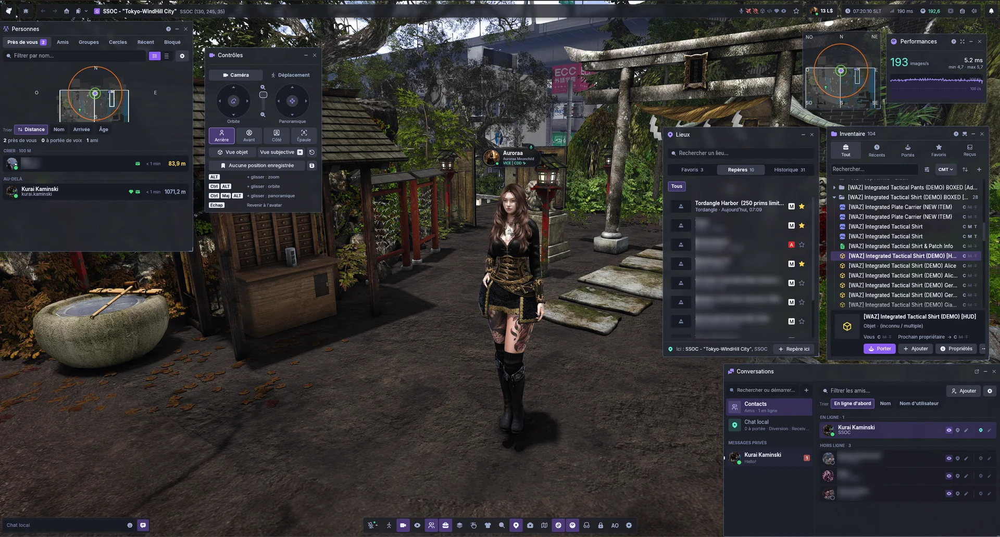
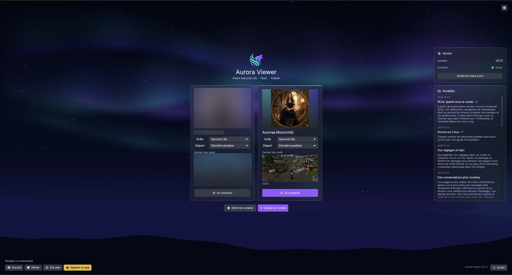

Confluence Viewer
A modern viewer written in Rust, with a Vulkan renderer and a clean interface, set up for OpenSim grids and the Confluence platform.

Built for today's hardware
The world you know, a fresh interface
It follows the established viewer's behaviour (same protocol, same rules, same defaults) while rethinking how the windows look and work.
Conversations
Chats like a messenger: bubbles, pictures, and teleport offers or gifts right in the thread.
Notification center
Unrolls from the bell, with the history of everything you missed.
Inventory explorer
Widens into folders, details and filters, with each item's rights at a glance.
Places
Favourites, landmarks and history in one list, with a preview of each place.
One search
Residents, places, events, groups and classifieds, with details beside the results.
Resource monitor
Shows where every millisecond, megabyte and kilobit goes.
Legacy toggles
Prefer the old layout for a window? Switch any redesigned window back to the legacy UI.
Creator tools
Building and land tools, photo tools, auto hover height and plenty of quality-of-life touches.
Grid status
Shows the grid's status feed and flags new entries, so residents know when something is up.

Where it comes from
Confluence Viewer is a modified version of Aurora Viewer, kept in step with Aurora's work and adjusted for OpenSim grids and the Confluence project. It is not made or supported by the Aurora Viewer team.
Aurora is a new codebase, not a fork: many of its parts are Rust ports of code from the Second Life viewer, credited file by file.
Licensed under the GNU GPL v3.